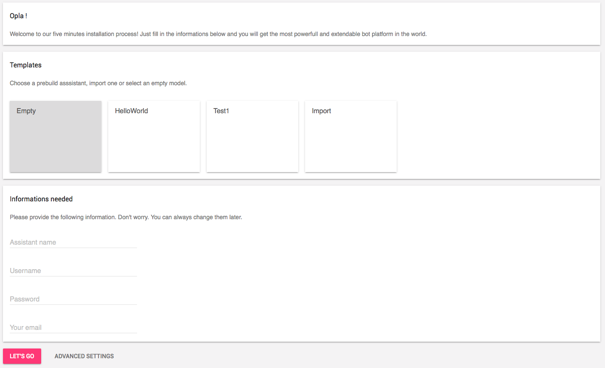

Create your own assistant. It is easy and fast. in less than 5 min, your bot will be ready !
Opla.ai is Opensource and available here : https://github.com/opla
Click on button GET STARTED. Nothing more !
In this page you need to fill important informations to setup your virtual assistant.
You could start from an empty chatbot or use a ready made one.
Only required informations are displayed. fill all and you are ready to use your chatbot.
Once you filled informations you could proceed and start your chatbot.
Not required and only if you are an expert. Here you could add plugins (messenger provider, NLP tools), extensions and webhooks. This part could also be edited later.